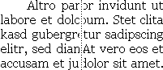
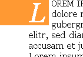
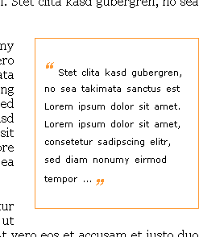
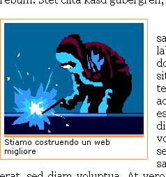

Come formattare un articolo
In questo articolo vedremo come formattare un articolo rivolgendo particolare attenzione ai paragrafi, alle immagini e alle citazioni. Il risultato è mostrato nella pagina di esempio.
Titolo, autore, descrizione
Per realizzare il titolo e la descrizione sono stati utilizzati gli header H1 e H2, per indicare l'autore è stato utilizzato un div con un identificatore.
Questa parte non necessita di particolari commenti poiché ci siamo limitati a specificare i font, i colori, gli allineamenti ed margini e bordi. Il codice utilizzato è il seguente:
CSS
h1 {
font:italic 900 5em/1em georgia, serif;
color: #F93;
display: block;
margin:50px 0 0 0;
border-top: 5px double #F93;
border-bottom: 2px solid #F93;
padding-left: 50px;
}
h2 {
font: italic 900 1.5em/1em verdana, helvetica, sans-serif;
display: block;
margin:10px 0;
text-align: right;
padding-right: 100px;
}
#autore {
font: .70em verdana, helvetica, sans-serif;
text-align: right;
margin:1px 0;
padding-right:50px;
border-style: solid none;
border-width: 1px;
border-color: #F93;
}
(X)HTML
<h1>Titolo dell'articolo</h1>
<div id="autore">di Pinco Pallino</div>
<h2>Spazio dedicato ad una breve
introduzione per descrivere l'argomento
trattato nell'articolo</h2>
Il corpo dell'articolo
#articolo {
font: 1em georgia, serif;
margin:0 50px 50px 50px;
padding-bottom:2em;
border-bottom: 2px dotted #F93;
}
Il corpo dell'articolo è stato racchiuso in un DIV identificato dal selettore #articolo. Oltre a specificare margini per distanziare il testo dal bordo, la visibilità del testo è stata aumentata utilizzando un carattere serif di dimensioni sufficientemente grandi.
I paragrafi
#articolo p {
text-indent: 2em;
text-align: justify
}
Per migliorare l'identificazione dei diversi paragrafi all'interno dell'articolo, abbiamo indentato il paragrafo e giustificato il testo. Un esempio è riportato nella seguente immagine:
Il paragrafo iniziale
Spesso negli articoli il primo paragrafo, specialmente la prima lettera, è formattato diversamente dal resto dell'articolo. Nel nostro caso si è scelto di formattare differentemente la prima riga e la prima lettera del primo paragrafo.
I CSS mettono a disposizione lo pseudo-elemento first-child che permetterebbe di riconoscere il primo paragrafo dell'articolo attraverso il selettore #paragrafo p:first-child, ma purtroppo solo i browser basati su Geko sono in grado di riconoscere lo pseudo-elemento first-child. Dovremo dunque introdurre un nuovo identificatore, #primo-paragrafo, da utilizzare nel selettore #articolo p#primo-paragrafo. La prima lettera e la prima riga del primo paragrafo saranno selezionati attraverso i seguenti selettori: #articolo p#primo-paragrafo:first-letter e #articolo p#primo-paragrafo:first-line.
La prima lettera
#articolo p#primo-paragrafo:first-letter {
font-size: 3em;
font-style: italic;
float: left;
background: #F93;
color: #FFF;
margin:0 5px 5px -50px;
padding: 5px 5px 5px 50px;
line-height:1em;
}
La prima lettera del primo paragrafo è alta il triplo del testo dell'articolo ed è in corsivo. Attravero la proprietà float:left si ottiene l'effetto di circondare la lettera col resto dell'articolo. Ulteriore risalto è dato specificando un colore di background e del testo differenti dal resto dell'articolo.
Specificando un margine sinistro pari (ma negativo) al margine specificato per il corpo dell'articolo (50px) e un padding sinistro pari (positivo) al margine sinistro (-50px) si ottiene un effetto a "linguetta". Affinché l'effetto funzioni correttamente, il primo paragrafo non deve essere indentato, per fare ciò si utilizza la seguente regola:
#articolo p#primo-paragrafo { text-indent: 0em; }
La prima lettera del primo paragrafo apparirà come nella seguente immagine:
La prima riga
Per la prima riga del primo paragrafo si è scelto di utilizzare il maiuscoletto, il codice CSS utilizzato è il seguente:
#articolo p#primo-paragrafo:first-line {
font-variant: small-caps;
}
Le citazioni
#articolo blockquote {
width:20%;
font: .70em/2em verdana, helvetica, sans-serif;
word-spacing: .2em;
padding: 2.5em 1em;
margin: 0 0 2em 2em;
border:1px solid #F93;
float:right;
}
#articolo blockquote span.special-quote {
color: #F93;
font: italic 900 2em/1em georgia, serif;
}
Per le citazioni si è utilizzato il tag BLOCKQUOTE. Attraverso la proprietà float: right si permette al resto dell'articolo di disporsi attorno al box della citazione. La larghezza è stata impostata al 20%, margini e padding sono stati regolati per fornire un aspetto più ordinato al box. Il carattere è diverso da quello dell'articolo per meglio rappresentare la separazione fra articolo e citazione.
Affinché le virgolette fossero evidenziate è stata creata la classe special-quote. Dimensioni dei font e interlinea sono stati impostati al fine di avere un insieme armonico. Si noti ad esempio che l'interlinea dell'elemento BLOCKQUOTE è stato impostato al valore 2em che è la dimensione scelta per le virgolette della classe special-quote, la cui interlinea è pari a 1em e quindi coincidente a quella del testo (La classe special-quote ha un'interlinea pari al 100% della dimensione del prorprio font che è il 200% del font del testo dell'elemento BLOCKQUOTE che ha un'interlinea pari al 200% della dimensione del font, dunque le due interlinee sono uguali). Un'esempio è riportato nella seguente immagine:
Le immagini
#articolo div.immagine {
width:200px;
padding:5px;
font: .70em verdana, helvetica, sans-serif;
margin:0px 10px 10px 0px;
border:1px solid #F93;
float:left;
}
#articolo div.immagine img {
border-bottom:3px solid #F93;
display:block;
padding-bottom:1px;
}
Per le immagini è stata specificata la classe immagine da utilizzare col tag div. Attraverso la proprietà float: left si permette al resto dell'articolo di disporsi attorno all'immagine. La larghezza è stata impostata a 200px, supponendo di utilizzare immagini larghe 200px. Margini e padding sono stati regolati per fornire un aspetto più ordinato al box. Il carattere del commento dell'immagine è diverso da quello dell'articolo per meglio rappresentare la separazione fra articolo e commento all'immagine.
Attraverso il selettore #articolo div.immagine img è possibile specificare le caratterisitiche dell'immagine, in particolare si è usata la proprietà display: block affinché il testo descrittivo sia posto sotto l'immagine. Nella parte inferiore dell'immagine è stato specificato un bordo di 3 pixel separato dall'immagine da un padding di 1 pixel. Un'esempio è riportato nella seguente immagine:
Note finali
Con questo articolo abbiamo dimostrato come, senza l'utilizzo di tabelle e altri artifici, sia possibile formattare un articolo rendendolo piacevole e senza influenzare in alcun modo l'accessibilità della pagina. A tale proposito si osservi come la stessa pagina priva dei CSS appaia usabile e accessibile con tutti i disposotivi per l'accesso a internet.
File correlati
Articoli correlati:
Strumenti